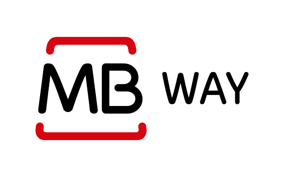

<app-header></app-header>

<ion-content *ngIf="day">
    <ion-item lines="none">
        <ion-thumbnail class="ion-margin">
            
        </ion-thumbnail>
        <ion-label>
            {{ day.spot.name }}<br>
            <ion-note>{{ day.spot.location.title }} {{ day.spot.location.subtitle }}</ion-note>
        </ion-label>
    </ion-item>

    <div class="grid">
        <div class="row">
            <div class="col">
                <ion-button (click)="pastDay()" color="danger" size="small" class="ion-margin"><ion-icon
                        name="chevron-back-outline"></ion-icon></ion-button>
            </div>
            <div class="col">
                <h3 class="ion-text-center">{{ day.day }}<br><small>{{ day.dayWeek }}</small></h3>
            </div>
            <div class="col ion-text-right">
                <ion-button (click)="nextDay()" color="danger" size="small" class="ion-margin"><ion-icon
                        name="chevron-forward-outline"></ion-icon></ion-button>
            </div>
        </div>
    </div>

    <ion-list class="ion-margin">
        <ion-item button *ngFor="let slot of day.slots; last as isLast" [lines]="isLast ? 'none' : ''" (click)="selectSlot(slot)"
            [color]="selectedSlots.includes(slot) ? 'light' : ''">
            <ion-label>
                {{ slot.start }}<br>
                <ion-note>Início às {{ slot.start }} e saida às {{ slot.end }}</ion-note>
            </ion-label>
        </ion-item>
    </ion-list>

    <ion-fab slot="fixed" vertical="bottom" horizontal="end" *ngIf="selectedSlots.length > 0">
        <ion-fab-button color="danger" (click)="isModalOpen = true">
            <ion-icon name="cart-outline"></ion-icon>
        </ion-fab-button>
    </ion-fab>

    <ion-modal [isOpen]="isModalOpen">
        <ng-template>
            <ion-header>
                <ion-toolbar color="danger">
                    <ion-title>Pagamento</ion-title>
                    <ion-buttons slot="end">
                        <ion-button (click)="setOpen(false)">Cancelar</ion-button>
                    </ion-buttons>
                </ion-toolbar>
            </ion-header>
            <ion-content>
                <h3 class="ion-text-center">{{ day.day }}<br><small>{{ day.dayWeek }}</small></h3>
                <ion-item lines="none">
                    <ion-thumbnail class="ion-margin">
                        
                    </ion-thumbnail>
                    <ion-label>
                        {{ day.spot.name }}<br>
                        <ion-note>{{ day.spot.location.title }} {{ day.spot.location.subtitle }}</ion-note>
                    </ion-label>
                </ion-item>
                <ion-list>
                    <ion-item *ngFor="let slot of selectedSlots; last as isLast" [lines]="isLast ? 'none' : ''">
                        <ion-label>
                            {{ slot.start }}<br>
                            <ion-note>Início às {{ slot.start }} e saida às {{ slot.end }}</ion-note>
                        </ion-label>
                    </ion-item>
                </ion-list>
                <ion-list class="ion-margin">
                    <ion-item color="light" button (click)="pay('mbway')">
                        
                    </ion-item>
                    <ion-item color="light" button  (click)="pay('multibanco')">
                        
                    </ion-item>
                    <ion-item color="light" button  (click)="pay('paypal')">
                        
                    </ion-item>
                </ion-list>
            </ion-content>
        </ng-template>
    </ion-modal>

</ion-content>